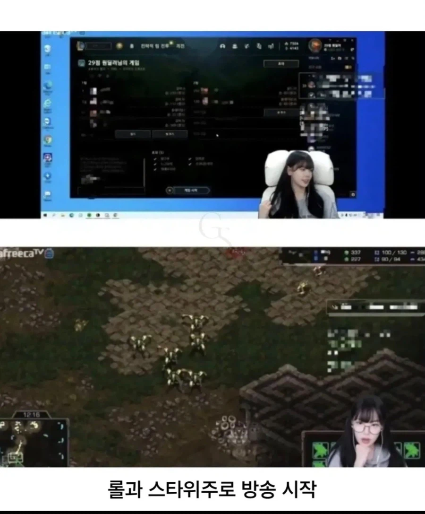
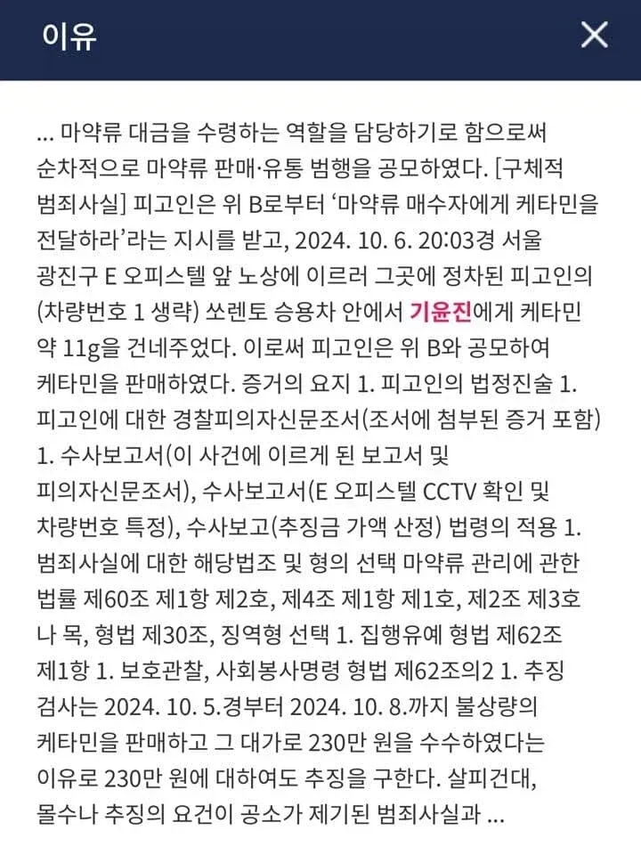

아나운서 -> BJ -> 성인 팬트리 -> 뽕 -> 감방


아나운서 -> BJ -> 성인 팬트리 -> 뽕 -> 감방
법 어기고 범법 저지르고 하면 그 당시에는 “이것만 하고 여기까지만 이정도는 괜찮아” 하겠지만 점점 결국 무뎌짐. 그러다 보면 끝이 걍 정해져있는거야. 조금의 흐트러짐도 경계하는게 맞음. 이걸 몰라서 범죄자가 됨 진짜 개멍청한짓
회장들이 살살 꼬시면 뭐
아프리카는 만남비가 있을 구조인데 뭐
도파민 역치가 계속 높아져서 저리된건가
도파민 내성 상태
계곡관상 ㅇㅈㄹ ㅋㅋㅋㅋㅋㅋㅋㅋ
자본주의의 끝은 인간성의 말살과 파멸이다? 너 이 새끼
화려하구만
약이 자본주의의 상징임?
그럼 미국 약쟁이들은 전부 개갑부였나?
저쪽 세계는 마약,성매매는 기본으로 깔려있다고 봐도 될듯
제목 뭔가ㅋㅋㅋㅋㅋ
마약은 자본주의보다 공산국가에서 더 판을 치는데 ㅋㅋ

뽕은 자본주의랑 상관 없자나..